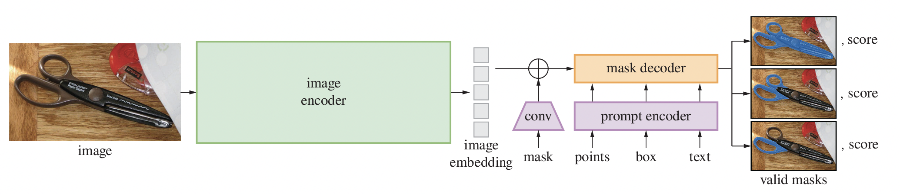
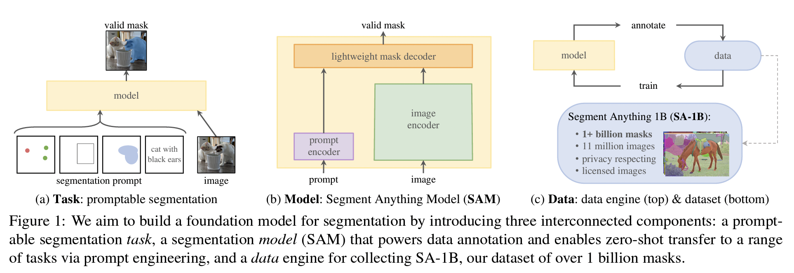
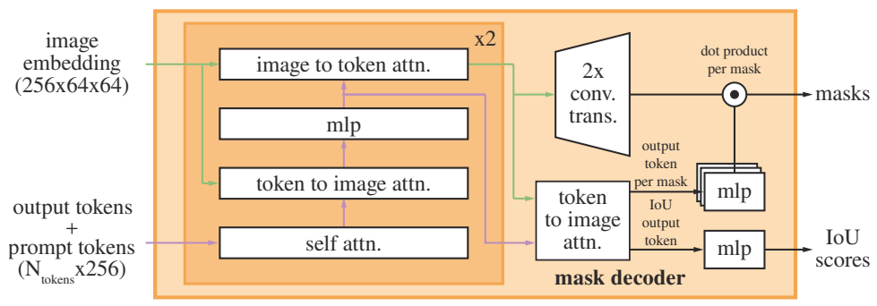

Segment Anything简介
SAM即Segment Anything，其目的在于构建一个分割领域的foundation model，用于zero-shot任务，以及交互式prompt分割任务。其结构如下所示。SAM具有大模型的encoder提图像特征，然后通过轻量的prompt encoder和mask decoder将提示转为embedding，并与图像的特征embedding进行交互（仍然是基于transformer），最后输出mask。
SAM模型整体结构
SAM作为foundation model，其输出的mask并非为某类或者某些特定类别的物体，而是一个广义的“object”或者“stuff”的概念，因此会有一定的歧义性（比如，将一个人的上半身的一个点作prompt，我们无法判断想要分割的是这个人的衣服，还是整个人等等），因此SAM可以支持multimask输出，并根据需要选择合适的mask。
SAM模型的整体结构与基本风格
设计原则：
遵循scaling law的思路，希望通过大模型、大数据量（data-driven），使得模型学习到（涌现出）类别/任务无关的“object”概念，成为视觉领域的通用模型，而不是针对某类任务或者某种特定类别训练模型
可prompt，可以交互输入一定先验信息，利用SAM的语义能力，完成开集分割（SAM无需知道分割的对象的各种类别信息，关于对象的信息被编码到prompt中）
prompt的多模态性：支持多种prompt类型，比如point、box、dense mask以及text（需要图文多模module如CLIP支持，将text的隐空间关联到图像的隐空间）
zero-shot能力/OpenSet能力：不指定任务，可以直接迁移到众多下游子任务中（当然后续研究发现对于特殊场景，比如医学图像、隐藏目标分割等，还是无法较好处理，但是语义能力仍可用，因此出现了SAMed、Adapter-SAM等方案将其迁移到特殊任务中）
整体训练过程：
SAM的训练和标注流程比较特殊，它并非通常的先标注-再训练-最后得到结果的这种范式，而是将标注（annotation）和模型训练（training）闭环，形成一个data engine的策略，即一边用标注数据训网络，一边用网络产生标注，从而可以整体运转，获得更多的标注数据训练模型，提高模型的效果。SAM论文中将训练过程主要分为三个阶段：
手工协助阶段（assisted-manual stage）
半自动阶段（semi-automatic stage）
全自动阶段（full-automatic stage）
SAM的任务、结构与训练过程
代码分析
Encoder细节
分为image encoder和prompt encoder，重点关注prompt encoder。
ImageEncoderViT
采用ViT架构，对图像做encode，图像固定尺寸输入(1024, 1024) ，最后得到的隐编码尺寸为(64, 64) （patch size 为 16）。在SAM的训练阶段，采用了MAE预训练好的ViT做监督训练。在预测阶段，首先将读入的图像的长边resize到指定尺寸（比如1024），同时保持其aspect ratio。然后，沿着短边方向进行填充，得到正方形图像输入。
PromptEncoder
为了适应不同的prompt类型，采用了多种不同的encoder。需要注意的是，即使point和bbox的prompt对于SAM也是进行编码送入网络处理的，因此不一定完全将point分割为指定类别，也不一定bbox prompt后的结果完全在bbox中，在SAM中这两者都只有提示大致位置的功能。
首先，PrompEncoder中设置了四种不同的embedding层：
1 2 3 4 self.num_point_embeddings: int = 4 point_embeddings = [nn.Embedding(1 , embed_dim) for i in range (self.num_point_embeddings)] self.point_embeddings = nn.ModuleList(point_embeddings) self.not_a_point_embed = nn.Embedding(1 , embed_dim)
其中，point_embeddings 共有4个，分别表示四种不同的点，即：正样本、负样本、bbox的左上角点、bbox的右下角点。nn.Embedding(1, embed_dim)中的输入为vocab长度为1，即只有一个not_a_point_embed，这个embedding对应label既不是前景fg也不是背景bg时的占位向量。上述的embedding训练好后，可以用来指示点的类别。
另一方面，点的位置信息则通过 位置编码（Position Encoding，PE） 来实现。PE的目的是将连续的位置信息映射到高频，从而增加不同位置的区分度。这里采用了PositionEmbeddingRandom实现。对正负样本point prompt和bbox的角点prompt进行PE编码后，与上面的点的类型编码结合（相加），得到最终的prompt encoding结果。
对point prompt（正负样本点）的编码：
1 2 3 4 5 6 7 8 9 10 11 12 13 14 15 16 17 18 19 def _embed_points ( self, points: torch.Tensor, labels: torch.Tensor, pad: bool , """Embeds point prompts.""" points = points + 0.5 if pad: padding_point = torch.zeros((points.shape[0 ], 1 , 2 ), device=points.device) padding_label = -torch.ones((labels.shape[0 ], 1 ), device=labels.device) points = torch.cat([points, padding_point], dim=1 ) labels = torch.cat([labels, padding_label], dim=1 ) point_embedding = self.pe_layer.forward_with_coords(points, self.input_image_size) point_embedding[labels == -1 ] = 0.0 point_embedding[labels == -1 ] += self.not_a_point_embed.weight point_embedding[labels == 0 ] += self.point_embeddings[0 ].weight point_embedding[labels == 1 ] += self.point_embeddings[1 ].weight return point_embedding
对bbox prompt的编码（top-left和bottom-right两角点）
1 2 3 4 5 6 7 8 def _embed_boxes (self, boxes: torch.Tensor ) -> torch.Tensor: """Embeds box prompts.""" boxes = boxes + 0.5 coords = boxes.reshape(-1 , 2 , 2 ) corner_embedding = self.pe_layer.forward_with_coords(coords, self.input_image_size) corner_embedding[:, 0 , :] += self.point_embeddings[2 ].weight corner_embedding[:, 1 , :] += self.point_embeddings[3 ].weight return corner_embedding
SAM中的dense prompt即mask输入。对于mask的处理，SAM通过一个下采样卷积层将其resize到与image embedding同等大小，然后相加。（由于mask_downscaling下采样了4倍，因此mask_input_size 需要被设置为image_embedding_size的4倍）
1 2 3 4 5 6 7 8 9 10 11 self.mask_input_size = (4 * image_embedding_size[0 ], 4 * image_embedding_size[1 ]) self.mask_downscaling = nn.Sequential( nn.Conv2d(1 , mask_in_chans // 4 , kernel_size=2 , stride=2 ), LayerNorm2d(mask_in_chans // 4 ), activation(), nn.Conv2d(mask_in_chans // 4 , mask_in_chans, kernel_size=2 , stride=2 ), LayerNorm2d(mask_in_chans), activation(), nn.Conv2d(mask_in_chans, embed_dim, kernel_size=1 ), ) self.no_mask_embed = nn.Embedding(1 , embed_dim)
同时，对于没有dense mask的情况，也训练一个embedding作为占位符，该向量在spatial（即H和W）方向上进行复制，得到和dense mask embedding相同的张量，与image embedding相加。
在forward中，对各个prompt进行组装，基本原则是sparse prompt（即各种点）得到的embedding向量沿着dim=1进行cat，即得到no_mask_embed中的权重向量。注意，这里的各种prompt都是可选的（optional）。
1 2 3 4 5 6 7 8 9 10 11 12 13 14 15 16 17 18 19 20 21 22 23 24 25 26 27 28 29 30 31 32 33 34 35 36 37 38 39 40 41 def forward ( self, points: Optional [Tuple [torch.Tensor, torch.Tensor]], boxes: Optional [torch.Tensor], masks: Optional [torch.Tensor], Tuple [torch.Tensor, torch.Tensor]: """ Embeds different types of prompts, returning both sparse and dense embeddings. Arguments: points (tuple(torch.Tensor, torch.Tensor) or none): point coordinates and labels to embed. boxes (torch.Tensor or none): boxes to embed masks (torch.Tensor or none): masks to embed Returns: torch.Tensor: sparse embeddings for the points and boxes, with shape BxNx(embed_dim), where N is determined by the number of input points and boxes. torch.Tensor: dense embeddings for the masks, in the shape Bx(embed_dim)x(embed_H)x(embed_W) """ bs = self._get_batch_size(points, boxes, masks) sparse_embeddings = torch.empty((bs, 0 , self.embed_dim), device=self._get_device()) if points is not None : coords, labels = points point_embeddings = self._embed_points(coords, labels, pad=(boxes is None )) sparse_embeddings = torch.cat([sparse_embeddings, point_embeddings], dim=1 ) if boxes is not None : box_embeddings = self._embed_boxes(boxes) sparse_embeddings = torch.cat([sparse_embeddings, box_embeddings], dim=1 ) if masks is not None : dense_embeddings = self._embed_masks(masks) else : dense_embeddings = self.no_mask_embed.weight.reshape(1 , -1 , 1 , 1 ).expand( bs, -1 , self.image_embedding_size[0 ], self.image_embedding_size[1 ] ) return sparse_embeddings, dense_embeddings
Decoder细节
SAM中的MaskDecoder 是一个轻量化的结构，便于交互式分割响应。其基本结构如图所示：
MaskDecoder结构示意图
首先，如前所述，图像被编码成为
具体实现如下：
先考虑需要输出的mask和iou的形式，这里：
1 self.num_mask_tokens = num_multimask_outputs + 1
num_multimask_outputs 这里设定为3。由于SAM支持两种模式：multimask和直接输出单一mask，因此需要+1。除了mask的token之外，还需要预测每个mask的iou，因此还需要一个iou token，经过Transformer处理后的iou token接入一个MLP网络，网络输出维度等于mask个数，因此为每个mask分配了一个iou分数。mask token处理后与一个经过Transformer + upscaling（2x transposed conv实现）的处理后的image embedding进行逐像素点乘，最终得到对应的mask。
下面来看MaskDecoder输入的形式，以及如何将prompt融合进来的。首先，mask token 和 iou token 也被设置为nn.Embedding层的权重，即：
1 2 3 self.iou_token = nn.Embedding(1 , transformer_dim) self.num_mask_tokens = num_multimask_outputs + 1 self.mask_tokens = nn.Embedding(self.num_mask_tokens, transformer_dim)
由于我们还有 PromptEncoder 编码来的稀疏和稠密prompt embeding，其中代表mask的稠密embedding比较简单，直接将其与图像embedding相加即可；对于稀疏prompt，将它们与前面的mask token和iou token在通道维度上拼接，得到输入Transformer的tokens：
1 2 3 output_tokens = torch.cat([self.iou_token.weight, self.mask_tokens.weight], dim=0 ) output_tokens = output_tokens.unsqueeze(0 ).expand(sparse_prompt_embeddings.size(0 ), -1 , -1 ) tokens = torch.cat((output_tokens, sparse_prompt_embeddings), dim=1 )
接下来，tokens将与image_embeddings（包括dense mask embedding 和 image pe）一起输入到一个TwoWayTransformer，即图中的主体部分。该模块可以对tokens→image embedding和image embeddings → tokens两个方向进行cross attention操作，从而使得image embedding也接受tokens的修正。这个过程如下：
1 2 3 4 5 6 7 8 9 10 11 12 13 14 15 16 17 18 19 20 21 22 23 24 25 26 27 28 29 30 31 32 def forward (self, queries: Tensor, keys: Tensor, query_pe: Tensor, key_pe: Tensor Tuple [Tensor, Tensor]:if self.skip_first_layer_pe: queries = self.self_attn(q=queries, k=queries, v=queries) else : q = queries + query_pe attn_out = self.self_attn(q=q, k=q, v=queries) queries = queries + attn_out queries = self.norm1(queries) q = queries + query_pe k = keys + key_pe attn_out = self.cross_attn_token_to_image(q=q, k=k, v=keys) queries = queries + attn_out queries = self.norm2(queries) mlp_out = self.mlp(queries) queries = queries + mlp_out queries = self.norm3(queries) q = queries + query_pe k = keys + key_pe attn_out = self.cross_attn_image_to_token(q=k, k=q, v=queries) keys = keys + attn_out keys = self.norm4(keys) return queries, keys
可以看出，两次cross attention中，q和k互换，并且k和v来源相同。最开始是一个self-attention，第一个cross attention后还有一个MLP对attention后的token进行更新。
最后，mask的输出方式如下：
1 2 3 4 5 6 7 8 9 10 11 12 src = src.transpose(1 , 2 ).view(b, c, h, w) upscaled_embedding = self.output_upscaling(src) hyper_in_list: List [torch.Tensor] = [] for i in range (self.num_mask_tokens): hyper_in_list.append(self.output_hypernetworks_mlps[i](mask_tokens_out[:, i, :])) hyper_in = torch.stack(hyper_in_list, dim=1 ) b, c, h, w = upscaled_embedding.shape masks = (hyper_in @ upscaled_embedding.view(b, c, h * w)).view(b, -1 , h, w) iou_pred = self.iou_prediction_head(iou_token_out)
然后，可以根据是否设置输出 multimask，选择合适的输出mask：
1 2 3 4 5 6 7 if multimask_output: mask_slice = slice (1 , None ) else : mask_slice = slice (0 , 1 ) masks = masks[:, mask_slice, :, :] iou_pred = iou_pred[:, mask_slice]
Reference
Segment Anything
https://github.com/facebookresearch/segment-anything
https://segment-anything.com/